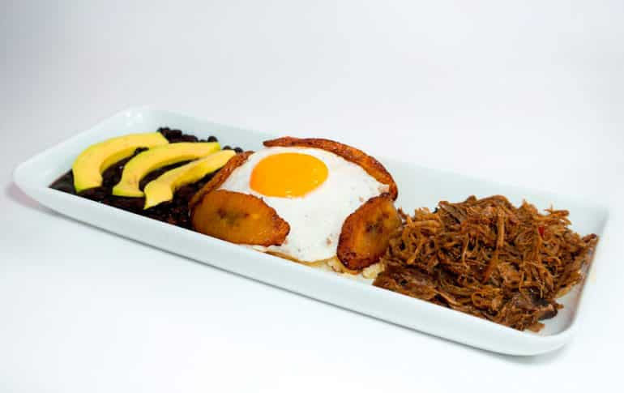

En esta pagina hablaremos sobre la deliciosa comida de venezuela
Comidas tipicas de Venezuela
Mondongo
Sabroso y tradicional. Así describo este delicioso plato heredado de la gastronomía española. Este plato se prepara con la panza de la vaca tanto en España como en los países latinoamericanos.
Arepas
La arepa es un alimento de origen precolombino de Colombia, Venezuela y Bolivia, hecho a base de masa de maíz seco molido o de harina de maíz precocida, de forma circular y aplanada. Es consumido de manera tradicional en las gastronomías de esos países.
Pescado Rebozado
Pescado frito tradicionalmente comido en venezuela
Asado Negro
El asado negro es una comida típica de Venezuela. El plato consiste en un corte de carne con forma cilíndrica, extraído de la parte trasera de la res; que se prepara con especias y papelón. El papelón, junto al vino y el ají dulce, le da un tono oscuro y un sabor dulce.
Torrejas
La torrija o torreja, también llamada tostada francesa, es un plato hecho de una rebanada de pan que es empapada en leche, almíbar o vino y, tras ser rebozada en huevo, se fríe en una sartén con aceite. Se endulza con miel, melaza o azúcar y es aromatizada con canela.
